01
HAWAIʻI / BABY WOMBAT / 01–40
하와이에서 보내는 작은 행복
40 CONCEPTS한눈에 비교하고, 마음에 드는 그림을 눌러 크게 보세요.
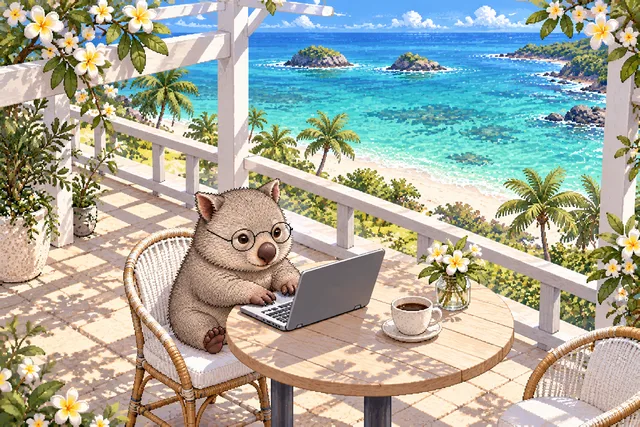
02
카일루아의 민트빛 바다
03
노스쇼어 서프 카페
04
하날레이의 초록 능선
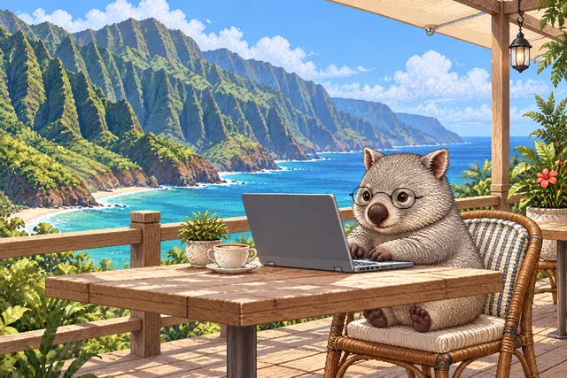
05
나팔리의 절벽 아래
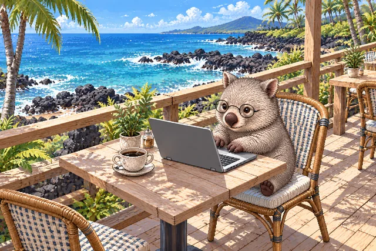
06
코나의 화산암 해안
07
하나의 비 갠 오후
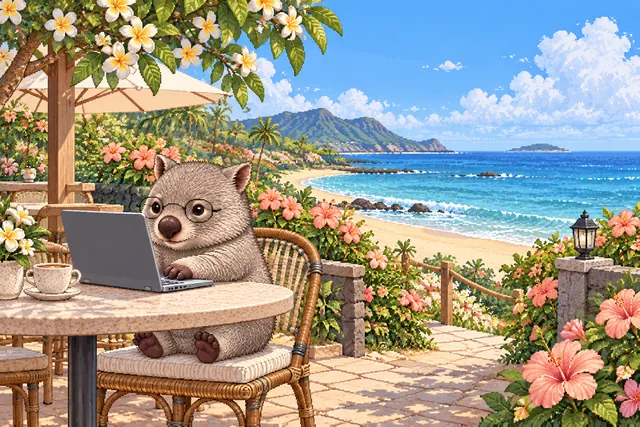
08
마우이의 꽃 그늘
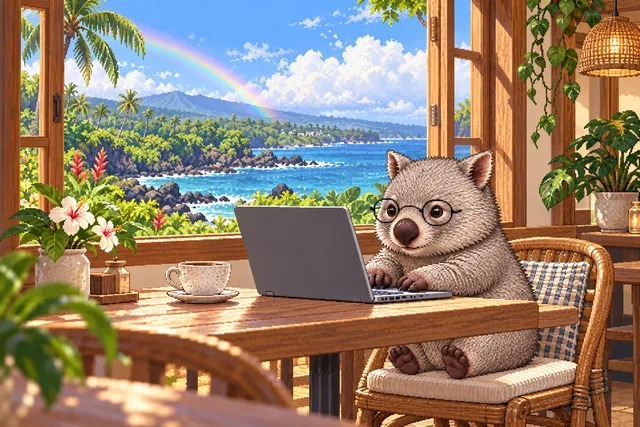
09
힐로의 무지개
10
코나의 행복한 노을
11
야자수 숲의 아침
12
작은 항구의 커피
13
투명한 라군의 그늘
14
해먹이 있는 데크
15
검은 모래와 하얀 창
16
새벽의 작은 키오스크
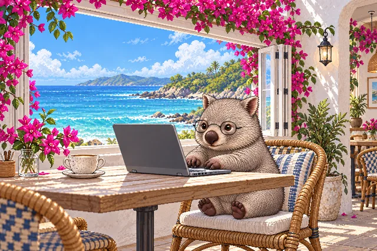
17
꽃 아치가 열린 창가
18
별빛을 기다리는 카페
19
바닷가 오두막의 문
20
바다를 향한 긴 자리
21
해무 너머 작은 섬
22
현무암 정원의 파라솔
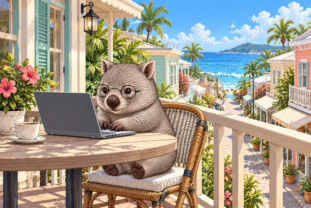
23
바다로 이어지는 거리
24
커피 정원의 전망
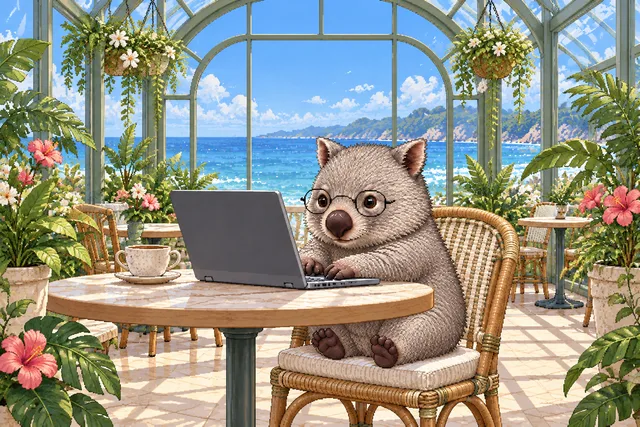
25
바다가 보이는 온실
26
레이스 커튼의 바람
27
아치 창 너머 푸른빛
28
초록 언덕의 테라스
29
분홍빛 바닷가 저녁
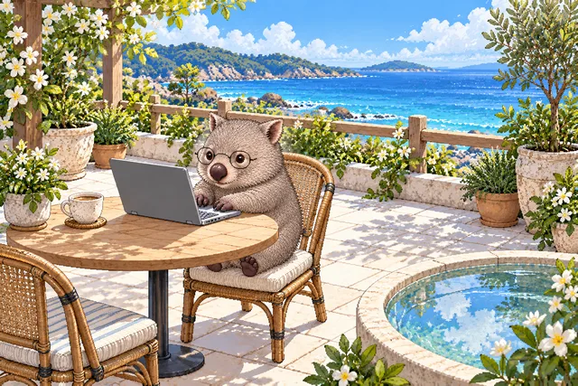
30
하얀 타일 마당
31
작은 해변 가제보
32
달빛이 머무는 자리
33
바랜 하늘색 커피집
34
초록 잎 사이의 카페
35
보트하우스의 열린 문
36
꽃이 이어지는 계단
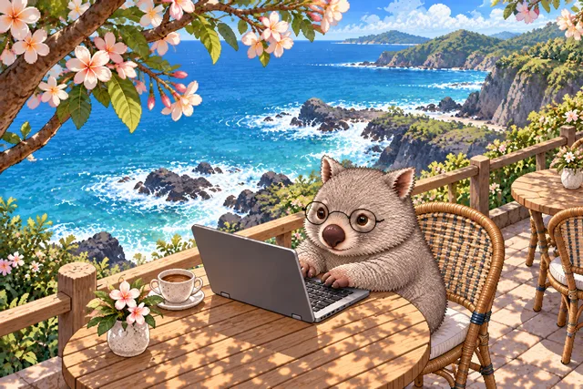
37
절벽 위 꽃 그늘
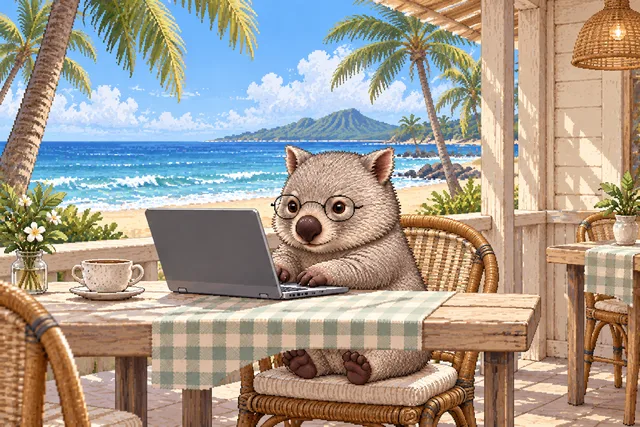
38
모래사장 앞 작은 커피집
39
책이 있는 바다 창가
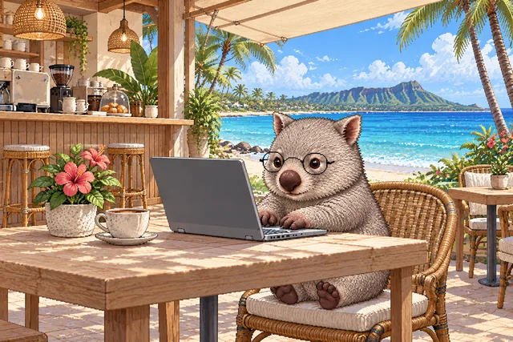
40